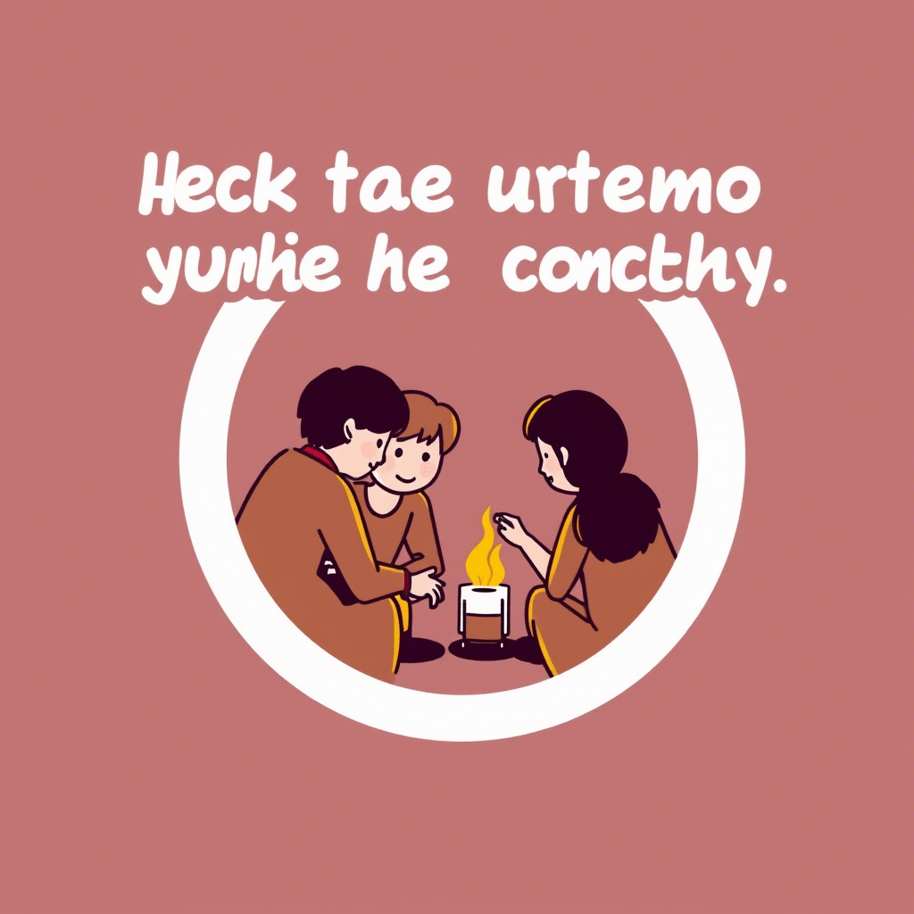

Фритрек и нулевой спринт: Подготовка к работе
Это было самое начало пути. На этом этапе важно было проникнуться
основами и настроиться на учёбу. И, возможно, подумать, как новые
знания могут повлиять на ваше будущее.
Обучение фронтенд-разработке — это не просто освоение HTML, CSS и
JavaScript. Это целое путешествие, наполненное первыми успехами,
небольшими паническими моментами и множеством "ага!" внутри головы.
Здесь, в этом месте, вы можете оставить на память своё воспоминание
о самом начале пути — о том, как всё начиналось. О фритеке , когда
казалось, что ты ничего не знаешь, но уже рвётся в бой. О нулевом
спринте , который стал вашей первой настоящей подготовкой к работе
мечты. Это ваш цифровой альбом воспоминаний — смелее рассказывайте,
как делали первый коммит, как верстали первую страницу и что пошло
не так (или даже как пошло таки правильно).
1 спринт: Я — чистый лист
На первых этапах мы работали со страхами и сомнениями, которые часто
испытывают новички. Один из них — страх перед чистым листом. Это,
конечно же, намного сложнее, чем боязнь куска бумаги. Часто за этим
ощущением скрываются более глубокие вопросы: с чего начать? а вдруг
будет слишком сложно? что, если я не справлюсь?
Обучение фронтенд-разработке — это не только погружение в синтаксис
и технологии, но и встреча со своими внутренними страхами. В самом
начале пути многих новичков настигает ощущение тревоги перед чистым
листом — будь то пустой файл HTML или новая тема в учебном плане. На
первый взгляд, это просто строка кода, которую нужно заполнить. Но
за этим часто скрываются гораздо более глубокие вопросы: с чего
начать? а справлюсь ли я? а вдруг это слишком сложно? Эти сомнения
знакомы каждому, кто делал первые шаги в программировании. И именно
они — часть роста. Постепенно, строчка за строчкой, вы находите в
себе силы начать, ошибаться, снова пробовать — и понимаете, что
чистый лист больше не страшен. Он становится вашим холстом.
1 спринт: А если не получится?
Первый проект — позади! Но это всё ещё самое начало пути. Радость
могла быстро померкнуть и смениться ожиданием провала. Или вы,
наоборот, могли вдохновиться успехами и поверить в себя.
Обучение фронтенд-разработке — это путь, полный взлётов и падений.
Первый проект — позади! Возможно, вы испытали волну радости, когда
увидели результат своих усилий на экране. Но эйфория могла быстро
смениться тревожным вопросом: «А что дальше?» Сомнения нередко
подкрадываются именно в моменты успеха: вдруг повезло? вдруг это был
случайный успех? Или, может быть, вы почувствовали настоящий прилив
сил и поняли: это то, чем я хочу заниматься! Неважно, каким было
ваше состояние после первого проекта — важно, что вы не
остановились. Ведь это действительно только начало , и впереди вас
ждёт ещё столько открытий, побед и возможностей для роста.
2 спринт: Погоня за идеалом
На этом этапе вы уже достаточно разбирались в основах вёрстки, чтобы
понять, как много ещё впереди. Вы могли попытаться погнаться за
идеалом и понять, что он недостижим. А, может, вы вовсе и не
подвержены перфекционизму и вместо того, чтобы сделать идеально,
старались просто сделать.
Обучение фронтенд-разработке — это как открывать дверь за дверью, и
каждая следующая ведёт в комнату, полную новых знаний. На этом этапе
вы уже чувствовали себя увереннее: освоили базу вёрстки, понимали,
как работают элементы на странице, и начинали видеть разницу между
«почти правильно» и «по-настоящему красиво». Именно тогда могло
прийти осознание: впереди ещё столько всего . И кто-то, быть может,
попытался погнаться за идеалом — часами правил одну и ту же кнопку,
чтобы всё было точно так , как в макете. А кто-то выбрал другой путь
— не стремился к совершенству, а просто делал, шаг за шагом, понимая
главное: сначала сделать, потом улучшить . Оба подхода — часть
роста. И оба заслуживают воспоминания.
2 спринт: О тех, кто рядом

Всё это время вы были не одиноки (хотя, возможно, иногда и
чувствовали, что одни против целого мира). Вас окружали
одногруппники, команда сопровождения и просто близкие люди, которым
можно пожаловаться, если очередной макет просто так не поддавался.
Осваивать что-то новое легче, когда рядом есть единомышленники, не
правда ли?
Обучение фронтенд-разработке — это путь, который вы проходили не в
одиночку. Даже если порой казалось, что весь мир — это вы и
неподдающийся flexbox, на самом деле вы всегда были окружены
поддержкой. Рядом были одногруппники , с которыми делились
лайфхаками и переживаниями, команда сопровождения, которая помогала
разобраться даже в самых запутанных багах, и, конечно же, близкие
люди , готовые выслушать, когда очередной макет отказывался
верстаться правильно. Осваивать новое всегда легче, когда есть с кем
разделить трудности и победы. Ведь именно благодаря этим людям путь
от первых строк кода до первого проекта стал не просто обучением — а
настоящей командной историей успеха.
3 спринт: Обходные стратегии
На этом курсе вы постоянно решали разные задачи. В какой-то момент
вам могло показаться, что решения просто иссякли. Значит, пришло
время посмотреть на задачу под другим углом.
Обучение фронтенд-разработке — это постоянное движение вперёд,
наполненное задачами самых разных уровней сложности. На этом курсе
вы неоднократно сталкивались с ситуациями, когда решение казалось
недостижимым: код не работал, как задумано, логика ускользала, а
мысли путались. Бывали моменты, когда вам, возможно, казалось, что
все варианты исчерпаны , что вы уже ничего нового не придумаете. Но
именно в такие минуты наступал важный поворот — вы учились смотреть
на задачу под другим углом . Спрашивали совета, перечитывали
документацию или просто делали паузу, чтобы начать с чистого листа.
И каждый раз находили выход. Потому что настоящий разработчик — это
не тот, кто знает всё, а тот, кто умеет искать новое решение.
3 спринт: Когда опускаются руки
Во время учёбы часто возникает чувство, когда не знаешь, за что
хвататься. Вроде и проектную пора сдавать, и задачи хочется
порешать, и в теории получше разобраться, и жизнь не забыть пожить.
В такие моменты очень нужна концентрация. Вспомните, откуда вы её
черпали.
Обучение фронтенд-разработке — это не только изучение языков и
технологий, но и постоянная борьба с внутренним хаосом. Бывали
моменты, когда вы чувствовали: времени в обрез, задач слишком много,
а голова будто отказывается выбирать, за что взяться в первую
очередь. Проект пора сдавать, нужно разобраться с новой темой,
решить пару задачек «на закрепление», да ещё и оставить время на
отдых, ведь без этого никуда. В такие дни особенно остро понимаешь
ценность концентрации — того самого внутреннего ресурса, который
помогает собраться, сделать глубокий вдох и двигаться дальше. Откуда
бы вы её ни черпали — через музыку, тишину, поддержку близких или
просто чашку чая в утренней тишине — эти моменты собранности стали
вашей опорой. И сейчас, оглядываясь назад, вы видите: даже в самый
беспокойный день вы находили силы сосредоточиться и сделать шаг
вперёд.
«Сейчас я здесь»
Сейчас вы уже очень много знаете о вёрстке. Но это только начало.
Во-первых, впереди ещё много материала про «красотищу». Во-вторых, с
окончанием курса учёба не заканчивается. Вёрстка — это целый мир. И
этот мир постоянно меняется. Познать его полностью не получится, но
это тот случай, когда важен сам процесс познания. Ведь часто путь —
и есть результат.
Обучение фронтенд-разработке — это путь, на котором каждый шаг
приближает вас к новому пониманию. Сейчас вы уже умеете много:
знаете, как устроены элементы на странице, как добиться идеального
отступа и заставить макет выглядеть одинаково во всех браузерах. Вы
освоили основы вёрстки — но это лишь вершина айсберга . Впереди вас
ждёт ещё больше возможностей для создания красивого и
функционального интерфейса — там, где начинается настоящая
«красотища» . А главное — вы теперь понимаете: учёба не
заканчивается с последним уроком. Вёрстка — это живой, динамично
развивающийся мир, в котором всегда найдётся что-то новое. И пусть
познать его целиком невозможно — разве не в этом его прелесть? Ведь
часто именно путь , а не только результат, делает нас теми, кем мы
становимся.